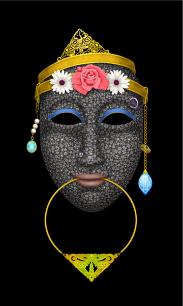

IMAGES OF THE DAY 99
03/11/2024 - 03/20/2024
03/11/2024
Mixed Technique
Fractals, Photography and Digital Processing
The Melody of Night
by Benedikt Amrheim
Click image to access artist's full exhibit

03/12/2024
Mixed Technique
Abstract Digital Art
Watching the Stars
by Maria Julia Bastias
Click image to access artist's full exhibit


03/13/2024
Mixed Technique
Masks
The Fancy
by Orna Ben-Shoshan
Click image to access artist's full exhibit
03/14/2024
Mixed Technique
Digital Art Portraits
People2
by Andrea Bonaventura
Click image to access artist's full exhibit

03/15/2024
Mixed Technique
Metaphysical Theory in Collage
#D88C
by Howard Brink
Click image to access artist's full exhibit

03/16/2024
Mixed Technique
Illustration Art
IF SNEAKY 72
by Hudson Calasans
Click image to access artist's full exhibit

03/17/2024
Mixed Technique
My Dear Malevich
Suprematism/Minimalism
#MDM 1
by Tom R. Chambers
Click image to access artist's full exhibit

03/18/2024
Mixed Technique
Digital and Korean Aesthetics
Shower
by Park Chunshin
Click image to access artist's full exhibit

03/19/2024
Mixed Technique
Art and Chess
Call Before Digging
by Andrew Cole
Click image to access artist's full exhibit

03/20/2024
Mixed Technique
Paintographs
The Pragmatic S
by Carol Cooper
Click image to access artist's full exhibit